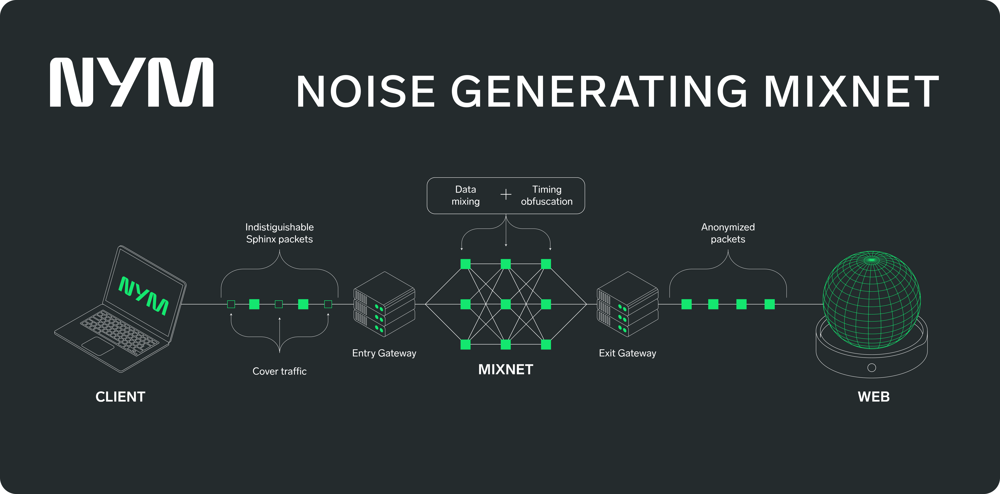

One project.
Everyone in sync.
Talk in channels, type in the same document, and manage who can touch what — without leaving the research. Keystrokes and cursors land in under 40 ms. Blazingly fast is the boring part.
Type together. No merge conflicts.
Open a note, a notebook cell, or a CSV row and edit it side by side. You see other people's cursors move, selections highlight, and text arrive as it's typed — in the same file, not a copy of it.
- Live cursors and presenceKnow who is here and exactly where they are working
- Character-by-character syncUpdates stream over a persistent WebSocket
- Comments in contextFeedback pinned to the cell, row, or sentence
- Attributable historyEvery change has an author and a rewind button
// one CRDT document per project file const doc = new Y.Doc() const room = new WebsocketProvider(ws, projectId, doc) doc.getText('field-notes').observe((event) => { room.awareness.setLocalStateField('cursor', event.cursor) })
Talk where the work happens.
Channels feel like Discord or Slack, but they live inside the project — next to the files, decisions, and people they're about. And when the conversation is sensitive, Anonymous mode routes it through the Nym Mixnet.
Channels, threads, and a quieter mode.
Every project gets its own channels. Messages, links, and decisions stay with the data instead of disappearing into another app.
Working with confidential sources, whistleblower material, or clinical data? Flip on Anonymous mode. Your identity and the timing pattern of your messages are hidden — even from us.
How the Nym Mixnet works
Switching on anonymity wraps each message in layers and sends it through a decentralized mixnet instead of a normal project route.
- 01Your laptop → Sphinx packet
The message is split into fixed-size packets and wrapped in layers of encryption, so no single hop sees both who sent it and where it's going.
- 02Nym Mixnet → three mixing layers
Independent mix nodes reorder packets, add randomized delays, and mix in indistinguishable cover traffic. Timing and volume patterns disappear.
- 03Exit gateway → project
The exit gateway sees only the destination, not the sender. Nothing in the chain can link your account to the conversation.

Invite people. Set the boundaries.
The project manager adds teammates and decides who can read, comment, edit files, run the lab, or manage the team. Changes are immediate, attributable, and easy to review.